Quando escrever se torna uma frustração, mais pressão não é a resposta.
- A professora pede para melhorar a letra, mas a criança não sabe por onde começar.
- Um «a» parece um «o», as palavras ficam coladas ou as letras saem da linha.
- O adulto pede mais cuidado; a criança tenta, mas não percebe o que deve mudar.
Imagina sentar-te ao lado do teu filho e, em vez de repetir «faz melhor», poderes mostrar-lhe o próximo passo. É para esses pequenos momentos de aprendizagem em conjunto que criámos este kit.
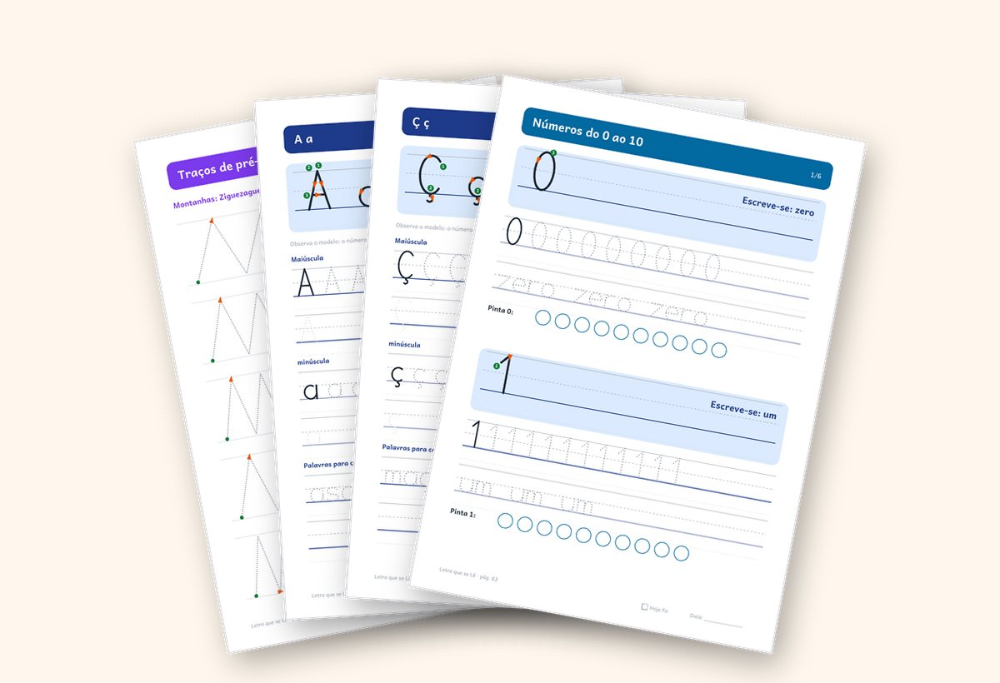
Mais do que letras no papel, é um momento de confiança entre vocês.
Há uma diferença entre corrigir cada erro e mostrar à criança que não precisa de descobrir tudo sozinha. Uma indicação clara, uma palavra de incentivo e tempo para tentar outra vez.
O Letra que se Lê dá-te exercícios para acompanhar cada pequeno passo, ao ritmo do teu filho.
Plano de prática para pais e educadores
Em vez de escolher fichas ao acaso, siga uma sequência simples que funciona.
O plano organiza 21 dias de atividades. São sessões sugeridas de 10 a 15 minutos, adaptáveis ao ritmo de cada criança — sem inventar exercícios todos os dias.
Mostre onde começar e acompanhe os movimentos do lápis com ponto, número e seta.
Ajude a criança a passar dos traços isolados para a escrita de palavras.
Use pequenas frases e compare a escrita com as primeiras fichas.
Veja antes de comprar
Não precisa de imaginar o que recebe: veja páginas reais.
Uma amostra do material que poderá utilizar: instruções para o adulto, fichas de prática e revisão.
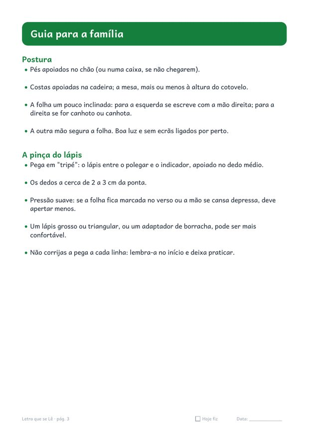
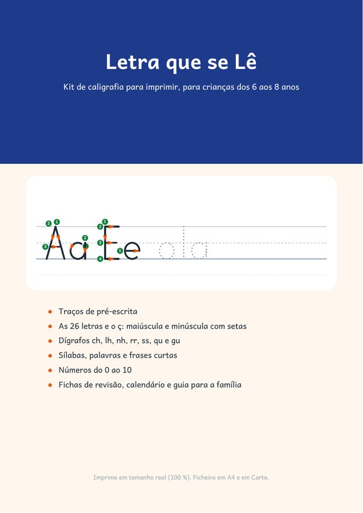
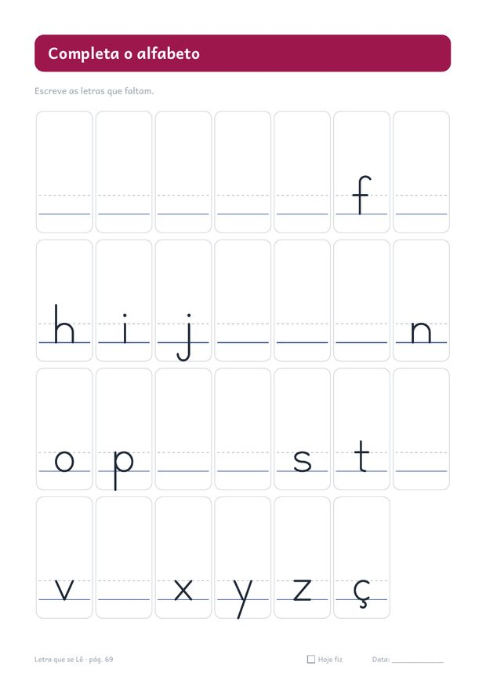
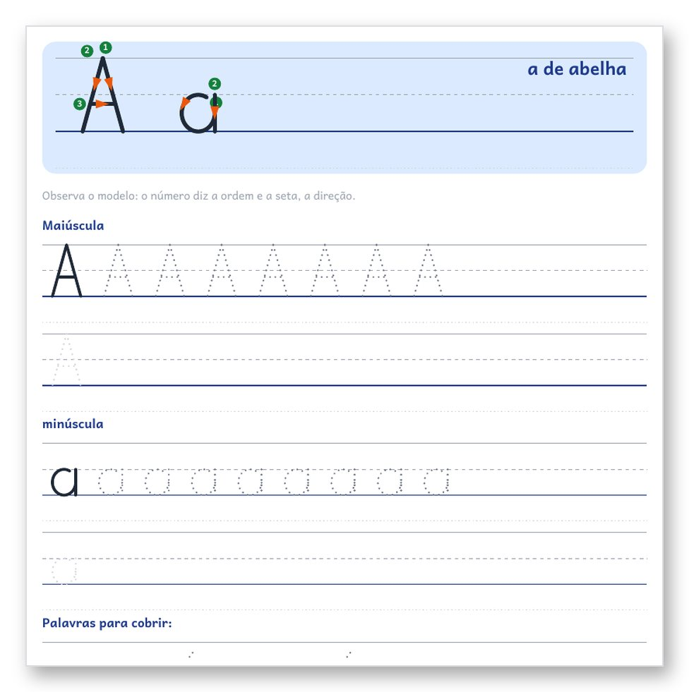
Três sinais que mostram por onde começar e como continuar
A criança pode consultar estas indicações enquanto pratica, ao seu ritmo:
- 1. Ponto verdeMostra onde encostar o lápis para começar.
- 2. NúmeroIndica a ordem dos traços.
- 3. SetaMostra em que direção mover o lápis.
Primeiro, segue-se a linha tracejada; depois, tenta-se escrever na linha em branco. São sinais visuais simples, integrados nas fichas do kit — o que a maioria dos cadernos genéricos não tem.
Quero ajudar o meu filho a praticar →Veja o que vai imprimir e utilizar em casa
Estas são imagens das fichas do kit: pré-escrita, letras, dígrafos, sílabas, palavras e frases. Pode conhecer os exercícios antes de comprar.
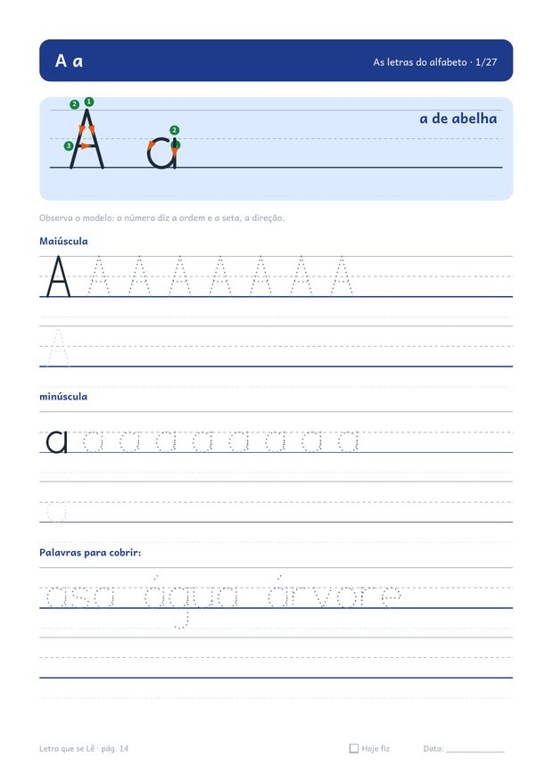
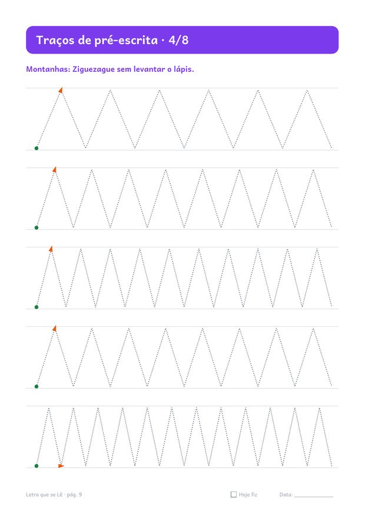
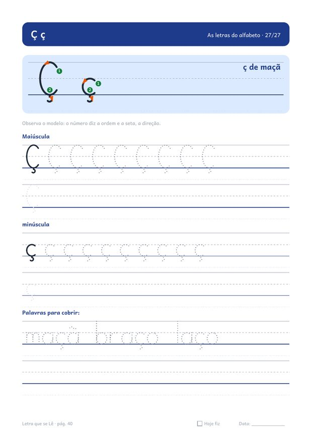
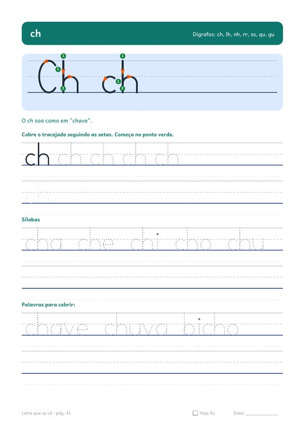
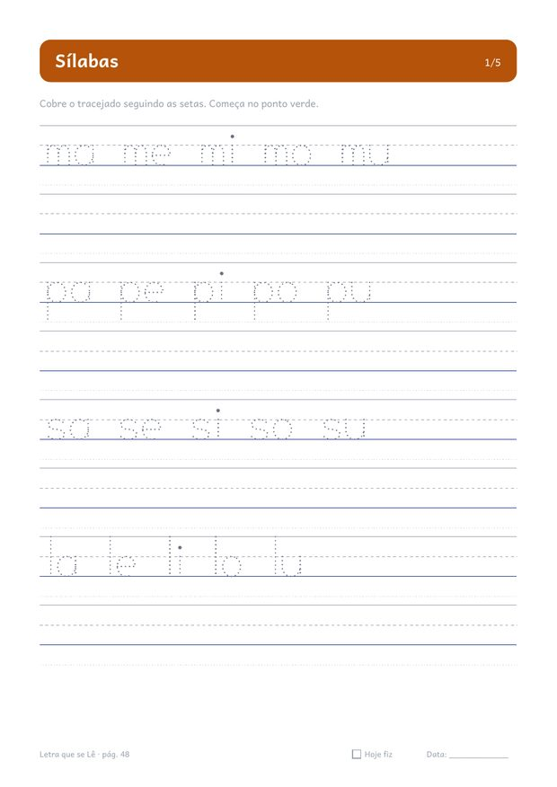
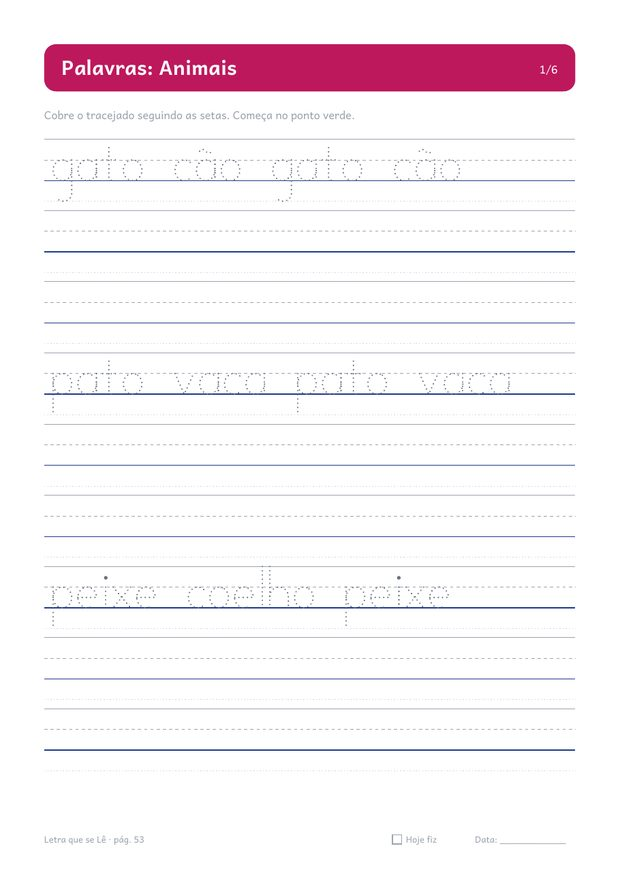
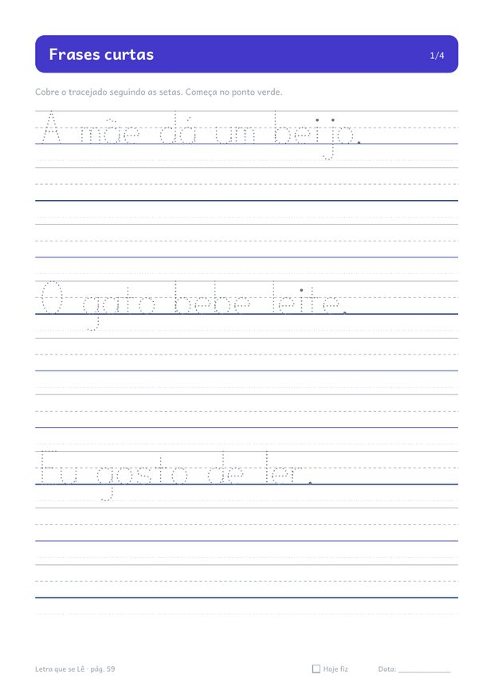
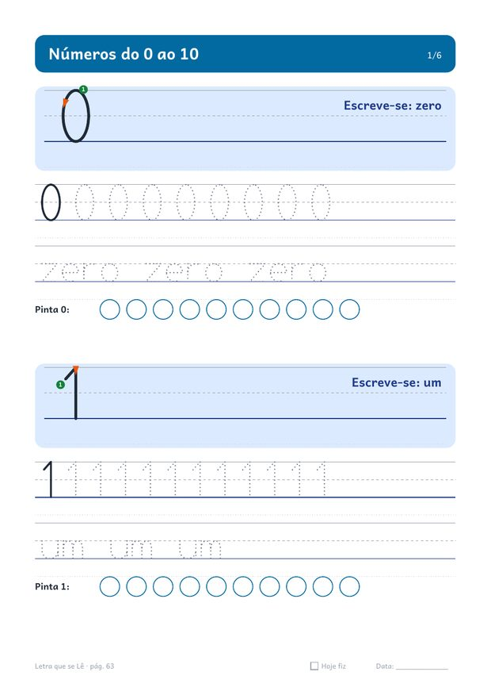
Não está a comprar apenas fichas. Está a levar um roteiro pronto para praticar em casa.
O kit reúne 78 páginas A4 dos primeiros movimentos às frases curtas, com instruções para a família, fichas de revisão e calendário. Imprima só o que for usar em cada sessão.
- Guia para a família · 2 págs.postura, pinça do lápis, ritmo e como acompanhar
- Assim escrevo hoje / Assim escrevo agora · 2 págs.para comparar a própria letra, sem pressão
- Traços de pré-escrita · 8 págs.linhas, ziguezague, ondas, pontes, laçadas e espirais
- As 26 letras e o ç · 27 págs.maiúscula e minúscula com número e seta
- Dígrafos · 7 págs.ch, lh, nh, rr, ss, qu e gu
- Sílabas · 5 págs.20 famílias silábicas
- Palavras · 6 págs.animais, comida, casa, escola, corpo e família
- Frases curtas · 4 págs.12 frases para copiar
- Números do 0 ao 10 · 6 págs.traço, nome e contagem
- Fichas de revisão · 5 págs.alfabeto, pares, nome, ditado e autoavaliação
- Calendário e registo · 2 págs.4 semanas com quadrado "Hoje fiz"
- Certificado de prática · 1 pág.para celebrar o esforço
Como começar em casa, passo a passo
Uma rotina pequena que cabe no dia a dia
Não precisa de preparar uma aula. Escolha uma ficha, sente-se ao lado da criança e acompanhe os traços com calma. O calendário ajuda a manter a regularidade, sem pressão por resultados imediatos.
O mais importante é praticar com orientação e celebrar cada tentativa.

Para quem é
- Crianças dos 6 aos 8 anos que estão a aprender ou a reforçar a letra de imprensa.
- Famílias que querem uma rotina curta e clara, sem ter de inventar exercícios.
- Quem prefere praticar em papel, longe dos ecrãs.
Como é a prática
- Atividades de letra de imprensa, com orientação visual de cada traço.
- Exercícios de pré-escrita, letras, sílabas, palavras e frases curtas.
- Fichas em A4 para imprimir e acompanhar em casa.
Letra que se Lê · Método dos 3 Sinais
Tenha uma forma concreta de orientar a escrita em casa — hoje mesmo.
Letra que se Lê · Kit de caligrafia
Pagamento único · Acesso após confirmação da compra
- Mais de 70 páginas em PDF para imprimir em A4
- Ponto, número e seta para orientar os traços
- Guia para a família e calendário de quatro semanas incluídos
- Exercícios de pré-escrita, letras, sílabas, palavras e frases
Acesso enviado pela Hotmart · PDF em A4 · Garantia de 7 dias
dias
Garantia de 7 dias — sem risco
Se o kit não servir, pede o reembolso nos 7 dias seguintes à compra, diretamente na Hotmart. Sem perguntas incómodas. Você experimenta sem compromisso.
Perguntas frequentes
Como recebo o kit?
Depois do pagamento, a Hotmart envia o acesso por e-mail. Descarrega o PDF e imprime quando quiser.
Que tamanho de papel uso?
A4, em "tamanho real" ou a 100 %.
Para que idade é?
Foi pensado para crianças dos 6 aos 8 anos. Os traços de pré-escrita também servem para começar mais cedo, com acompanhamento.
É letra manuscrita ligada?
Não. É letra de imprensa. Se na escola usam letra ligada, confirme com a professora antes de comprar.
Quanto tempo por dia?
Recomendamos 10 a 15 minutos, 4 ou 5 dias por semana. Mais vale pouco e regular.
Serve para canhotos?
Sim. O guia explica como inclinar a folha e posicionar a mão.
Que meios de pagamento há?
Os meios disponíveis aparecem no checkout da Hotmart, de acordo com o seu país.
E se não gostar?
Tem 7 dias de garantia para pedir o reembolso na Hotmart.
Pronto para começar pela primeira ficha?
Já conhece as páginas, o Método dos 3 Sinais e a sequência de prática de 21 dias. O kit completo está disponível por 7,90 €, em pagamento único.
Quero começar a praticar com o meu filho →